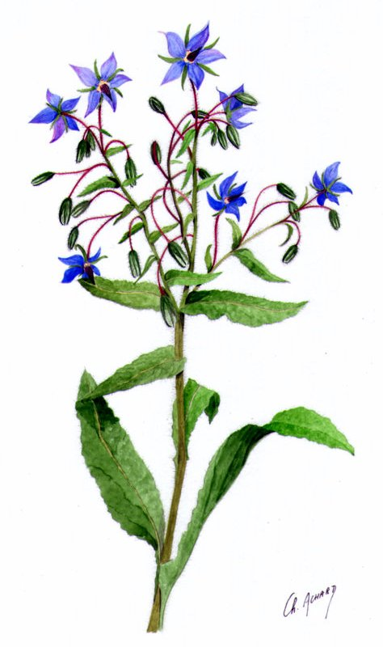

Bisette
dopant (infusion) - 30 po
↪ plante - plaine - été
↪ plante - plaine - été
 Les infusions de cette jolie plante aux fleurs bleu vif et aux fines tiges violette renforcent l'adresse naturelle d'une personne.
Les infusions de cette jolie plante aux fleurs bleu vif et aux fines tiges violette renforcent l'adresse naturelle d'une personne.
Pour la minute qui suit son absorption, l'infusion de bisette donne un bonus de +1 au toucher et aux jets de Dextérité. Attention toutefois, l'absorption de plus d'une tisane de bisette entre deux repos courts donne des troubles de la vision, et peut même rendre temporairement aveugle en cas d'excès.

Illustration reproduite avec l'aimable autorisation de Christine Achard
Illustration reproduite avec l'aimable autorisation de Christine Achard
Recueil des plantes d´AideDD